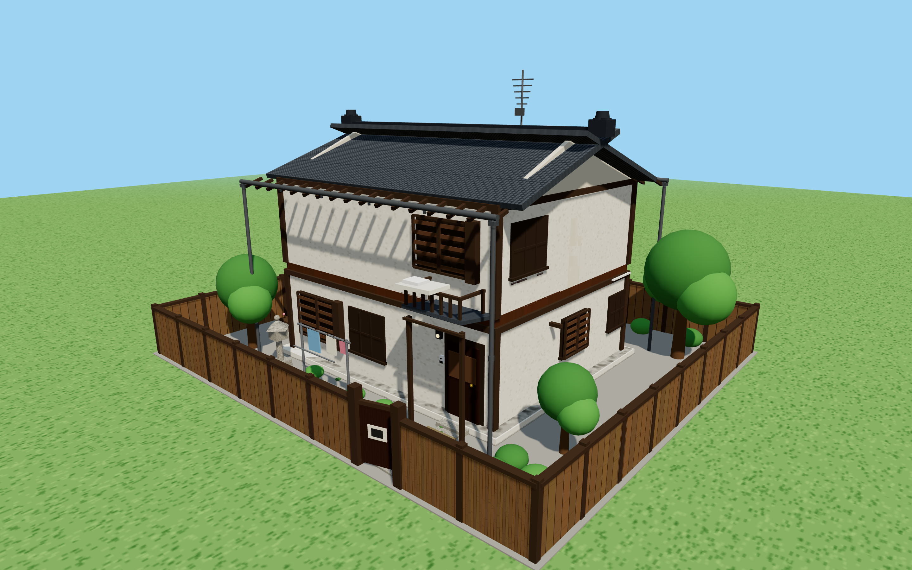
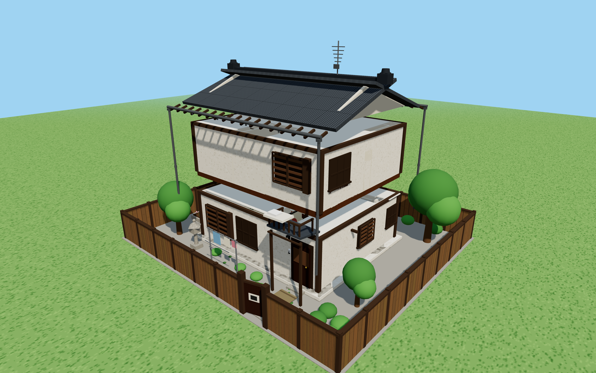
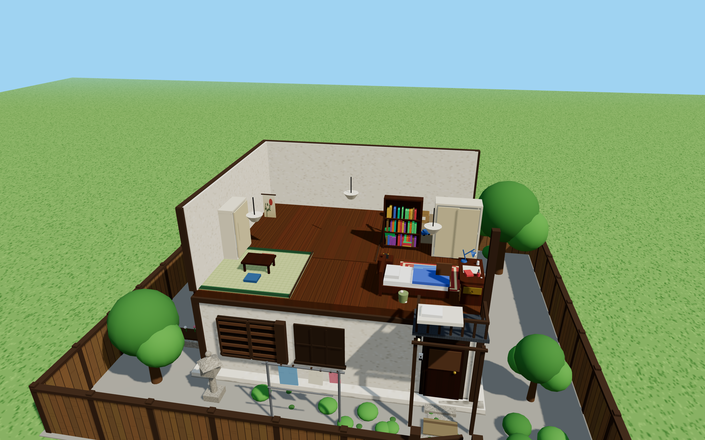
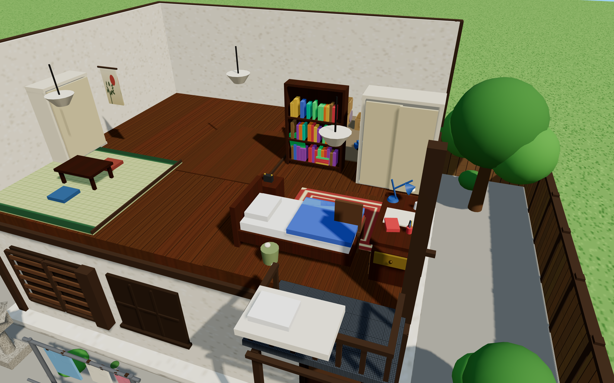
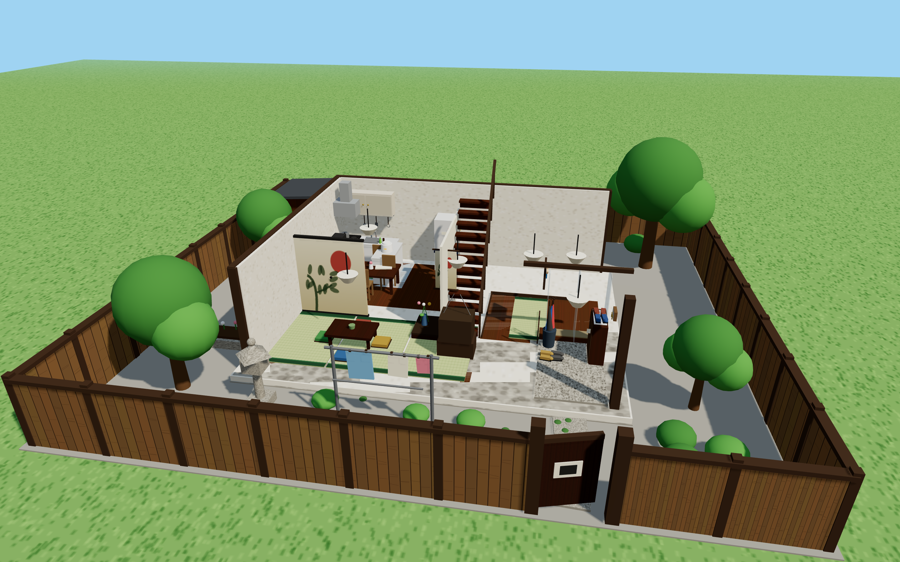

根据新版《哆啦A梦》动画房型间取（东京都练马区月见台 · 3DK 木造二阶建）进行的三维精细还原，展示房屋外观、各楼层空间与房间细节。
两层日式木造独栋，深灰瓦屋顶、鬼瓦脊饰、电视天线、木板塀围墙、院落晾衣杆与玄关雨棚。大雄房间窗户正对玄关上方屋顶。

屋顶、二楼生活区与一楼公共起居空间三层垂直分层，清晰呈现野比家的立体空间布局。

东侧为大雄房间（6帖榻榻米，含时光机书桌与壁橱床铺）；西侧为和室客房与储物间；中央为走廊通道。

标志性空间特写：朝东的书桌（右下抽屉连同时光机）、经典复古台灯、哆啦A梦睡觉的双层壁橱床铺与书架。

8帖榻榻米客厅（矮桌、电视与壁龛佛坛）、10帖餐厨（流理台、水槽、燃气灶与冰箱）、下沉式玄关鞋柜、以及浴室与独立卫生间。
